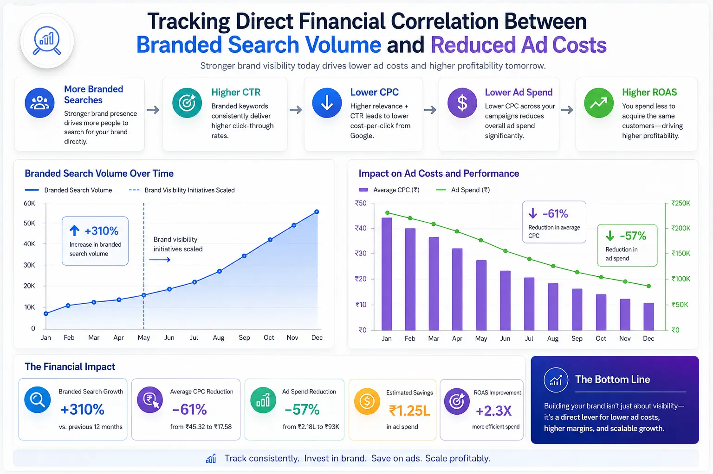
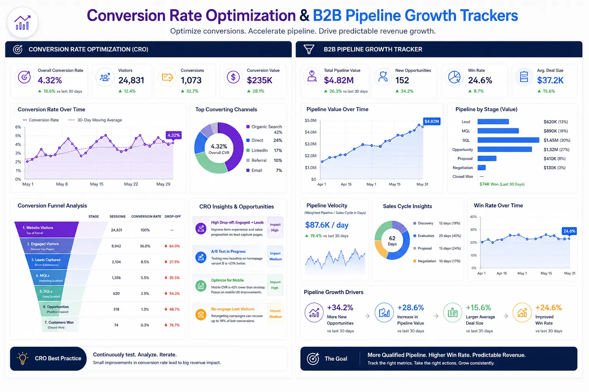

Tracking the Direct Financial Correlation Between Branded Search Volume and Reduced Ad Costs
The Economics of Attention: Bypassing High paid Ad Auctions
In the hyper-competitive landscape of digital customer acquisition, businesses are facing a silent crisis: the relentless inflation of advertising costs. Paid search and paid social campaigns that once yielded high returns are now bogged down by soaring cost-per-click (CPC) rates and diminishing click-through rates (CTR). As standard ad networks become increasingly saturated, companies are forced to bid higher on generic keywords just to maintain their baseline visibility. In this environment, forward-thinking organizations are shifting their focus to a more sustainable, high-leverage asset: the personal brands of their key executives. However, to justify this strategic pivot, finance and marketing teams must be able to quantify the results. This requires setting up robust Personal Branding Metrics and conducting precise Google search volume data tracking to establish the direct financial correlation between a strong personal brand and a significant reduction in paid advertising expenditures.
By shifting resource allocation from direct ad spend to building executive authority and tracking Personal Branding Metrics, brands can tap into the organic demand generated by direct-to-name search queries. The financial logic is straightforward: when a buyer searches for a specific executive or company name rather than a generic service description, they bypass the paid auction. This organic click costs nothing, yet it carries a much higher intent. In this guide, we will explore the methodologies for Measuring personal brand impact, dissect the mechanics of Measuring Branded Search Velocity, and demonstrate how Tracking Authority Inbound Funnel ROI can transform your cost structures, lowering your customer acquisition costs (CAC) while raising your margins.
How Branded Search Volume Dynamics Lowers CAC
At its core, the correlation between branded search and reduced ad costs is a function of trust and intent. Generic keywords like "B2B marketing consultant" or "enterprise software solution" are battlegrounds where companies spend millions bidding against one another. This competitive bidding drives up CPC, making paid client acquisition an expensive, low-margin endeavor. Conversely, when prospects search for a specific name—for instance, the founder of a recognized methodology—the intent is highly focused, and the competition is non-existent.
When you utilize Google search volume data tracking to monitor these queries, you will observe a distinct behavioral pattern. Branded search terms yield click-through rates that frequently exceed 60%, compared to the meager 2-5% average for generic paid search ads. Because you naturally rank first for your own name or proprietary framework, you do not have to pay search engines to capture this traffic. As a result, the rise in branded search volume acts as a natural offset to your paid traffic needs. By focusing on Measuring personal brand impact, organizations can track how much paid budget is saved each month as organic branded search traffic replaces paid generic clicks. Over time, this shifting distribution creates a structural advantage: your total advertising costs decrease even as your pipeline grows, offering a concrete demonstration of thought leadership valuation in action.
Furthermore, the quality of traffic generated by branded searches is vastly superior. A visitor arriving via a branded search query has already bypassed the initial skepticism associated with cold traffic. They are not comparing ten different tabs; they have arrived on your site because of a pre-established affinity. Consequently, they interact with your content longer, browse more pages, and convert into leads at a rate that traditional search ads cannot match. This behavioral difference is the secret engine behind reduced ad costs: you are not just getting free traffic; you are getting high-converting traffic that reduces your need for retargeting campaigns.
Measuring Branded Search Velocity: The Leading Indicator of Pipeline Health
To operationalize this strategy, marketing teams must look beyond static search volumes and focus on velocity. Branded search velocity refers to the rate of change and growth of branded search queries over a defined period. If your branded search volume is growing by 5% month-over-month, your velocity is positive, but it may not be fast enough to offset rising ad costs. If, however, your velocity spikes by 35% following a major podcast appearance or a viral thought leadership article, you are witnessing the direct impact of authority-driven marketing.
Measuring Branded Search Velocity requires integrating data from Google Search Console, Google Trends, and advanced SEO monitoring tools. By embedding these Personal Branding Metrics into your B2B pipeline growth trackers, you gain a real-time, leading indicator of market demand. Unlike lag indicators like closed-won revenue, search velocity tells you how many people are actively thinking about and seeking out your brand today. This metric is critical for analyzing inbound client acquisition velocity, as there is a direct temporal correlation between a spike in branded search velocity and an influx of high-intent discovery calls booked 14 to 30 days later. Tracking this relationship allows teams to forecast pipeline growth with remarkable accuracy and adjust their paid advertising budgets downward, confident that the organic inbound engine will fill the gap.
Additionally, analyzing search velocity helps identify the decay rate of your authority marketing campaigns. When an executive publishes an industry-defining whitepaper, search queries will peak. By observing how quickly this peak subsides, marketing teams can determine the optimal frequency of their thought leadership initiatives. This data-driven approach removes the guesswork from content production, ensuring that your team produces high-impact assets exactly when they are needed to sustain a steady stream of branded search volume.
Tracking Authority Inbound Funnel ROI: The Attribution Framework
One of the primary challenges in personal branding is attribution. Because personal brand interactions often occur across multiple channels—such as LinkedIn, podcasts, industry events, and newsletters—traditional single-touch attribution models fail to capture the full buyer journey. A prospect might read five LinkedIn posts from a founder, listen to them on a podcast, and then finally search their name on Google to visit their website and book a call. In a basic last-click attribution model, this conversion is recorded as "Organic Search," hiding the role that the founder's content played.
To solve this, organizations must implement a multi-touch attribution model geared toward Tracking Authority Inbound Funnel ROI. This involves tracing the customer journey back to the initial brand impressions and correlating spikes in executive visibility with direct traffic increases. By utilizing customized landing pages, unique UTM parameters, and self-reported attribution questions (such as "How did you first hear about us?"), companies can bridge the gap between social media engagement and organic search behavior. When these data points are combined with Google search volume data tracking, the financial ROI of the authority funnel becomes clear. You can directly calculate the cost-per-lead of your personal branding efforts and compare it to the cost-per-lead of your paid advertising campaigns, proving that personal brand building is not a vanity project, but a high-yielding financial investment.
Moreover, a robust attribution framework enables teams to calculate the Customer Lifetime Value (LTV) of clients acquired through authority funnels. Historical data suggests that clients who buy from recognized industry authorities have higher retention rates and larger average deal sizes. Because the relationship is built on mutual respect and expertise rather than a transactional sales pitch, these clients are less likely to churn and more open to upsells. Thus, Tracking Authority Inbound Funnel ROI reveals a double benefit: it lowers your acquisition costs on the front end while maximizing client value on the back end.
Zero-Cost Click Acquisition
By leveraging Google search volume data tracking, you can measure the steady rise of unpaid, direct searches for your executives. Because you own the top organic position for your name, these clicks are completely free. This organic traffic acts as a direct substitute for high-cost paid ads, drastically reducing your monthly search engine marketing (SEM) budgets while maintaining or increasing traffic volume.
Compressing the B2B Sales Cycle
When you focus on Measuring Branded Search Velocity, you will observe that high-velocity search growth directly correlates with faster deal closure. Prospects who search for your name are already familiar with your work and methodology. By bypassing the initial education and trust-building phases, these leads move through your pipeline much faster, leading to a measurable acceleration in your sales cycle.
Elevated Lead-to-Close Ratios
By analyzing inbound client acquisition velocity, we find that branded search traffic converts at a rate 3x to 5x higher than generic paid traffic. These are high-intent buyers who are looking specifically for your solutions. When these leads enter your CRM, they close at a significantly higher rate, which maximizes the output of your sales team and increases the ROI of every marketing dollar spent.
Structural Shield Against Ad Inflation
Paid media costs are subject to market volatility and platform algorithm updates, making them a risky foundation for long-term growth. Incorporating a robust personal brand creates a self-sustaining organic loop. By focusing on Measuring personal brand impact and tracking organic growth, you build an asset that insulates your company from rising CPCs and gives you complete control over your client acquisition economics.

Deconstructing the Organic Inbound Funnel: The Buyer's Journey
To fully understand how branded search volume reduces ad costs, one must deconstruct the buyer's journey within an organic inbound funnel. The traditional paid funnel relies on interruption: showing an ad to a prospect while they are browsing their social feed or searching for a related topic. This interruption requires a significant financial outlay to capture attention, and the friction is high because the prospect has no pre-existing relationship with the advertiser.
The organic authority funnel, by contrast, operates on attraction. It begins when an executive shares valuable, non-obvious insights on social channels or industry forums. This content addresses complex challenges and provides practical frameworks, establishing the executive's expertise. As prospects consume this content over time, a relationship of trust is formed. When the prospect eventually faces a challenge that requires external help, they do not click on a paid ad; they search for the executive's name or company directly on Google.
This branded search is the moment of transition. The prospect enters the website not as a cold lead, but as a warm advocate. They bypass the standard landing pages designed for cold traffic and go directly to case studies, service pages, or contact forms. Because they are already pre-sold on the executive's methodology, the conversion rate from visitor to discovery call is incredibly high. By structuring your website to cater to these high-intent visitors, you can maximize the value of every branded search, creating a highly efficient client acquisition loop that requires zero ongoing ad spend.
Building the Tracking Infrastructure: Dashboards, Attribution, and Optimization Visuals
Quantifying the financial impact of personal branding requires more than just spreadsheets; it demands a unified tracking dashboard that translates raw data into strategic insights. The first step in building this infrastructure is setting up B2B pipeline growth trackers that pull data from your website analytics, CRM, Google Search Console, and paid ad platforms. These trackers should monitor the ratio of branded search traffic versus generic paid traffic and map the cost savings over time.
To make this data actionable for executives and stakeholders, you must integrate conversion rate optimization visuals into your reporting. These visuals—which include pipeline funnel charts, traffic attribution flow diagrams, and historical CPC correlation graphs—clearly illustrate how increases in branded search volume correspond with lower cost-per-click rates on your paid channels. By visualizing these trends, you can easily identify where paid campaigns can be scaled down as organic authority traffic scales up. Furthermore, these dashboards allow you to monitor key metrics like page-load speeds, exit rates, and conversion bottlenecks on your branded landing pages.
When marketing teams can visually track these correlations, they can optimize the user experience in real-time, ensuring that the high-intent organic traffic generated by your personal brand is captured and converted with maximum efficiency. This continuous optimization loop is essential for Tracking Authority Inbound Funnel ROI and maintaining long-term acquisition efficiency. For B2B brands, this visual representation is crucial for aligning sales and marketing teams. When sales representatives can see that a high percentage of closed deals originated from branded search queries, they gain a deeper appreciation for thought leadership content. This alignment fosters a collaborative culture where sales reps share real-world client feedback with the content team, leading to even more relevant and impactful thought leadership assets.
Google Search Console & Trends
The foundational tools for Google search volume data tracking. Use them to monitor search volume, click-through rates, and average positions for branded keywords. By tracking these metrics weekly, you can measure the growth of your digital footprint and identify which thought leadership topics are driving the most search interest.
CRM & Pipeline Integration
Configure your CRM with custom fields to track lead source and self-reported attribution. By feeding this data into your B2B pipeline growth trackers, you can connect branded search queries to direct revenue, enabling accurate thought leadership valuation and pipeline forecasting.
Attribution & Analytics Visuals
Utilize dashboard platforms to build conversion rate optimization visuals that display lead generation trends. These visual tools show the flow of branded traffic through your funnel, helping you isolate bottlenecks, optimize landing pages, and analyze the financial impact of your personal branding investments.

Overcoming the Challenges of Branded Search Measurement
While the financial benefits of branded search are clear, implementing a measurement framework is not without its challenges. One of the primary obstacles is the "dark social" phenomenon—the sharing of content and recommendations through private channels like email, Slack, and direct messages. These interactions are invisible to standard analytics tools, making it difficult to trace the origin of a branded search query.
To overcome this challenge, businesses must combine quantitative data with qualitative insights. Self-reported attribution is a powerful tool in this regard. By adding a simple, open-ended question to your contact forms—such as "What made you search for us today?"—you can capture the context that analytics tools miss. A prospect might write, "I saw your founder speak at a conference last month," or "A colleague shared your recent whitepaper on Slack."
Another challenge is search term variance. Prospects may search for a founder's name, their company's name, or a combination of both, alongside various misspellings. Marketing teams must conduct comprehensive keyword research to identify all potential variations of their branded terms. By grouping these terms into a single tracking category within your Google search volume data tracking tools, you can ensure that you are capturing the full scope of your branded search volume and accurately calculating your cost savings.
The Financial Valuation of Thought Leadership: From Vanity to Value
Historically, personal branding was viewed as a soft marketing initiative—something that improved "reputation" or "brand awareness" but could not be measured on a balance sheet. This view is no longer viable. In modern business, personal branding is a capital investment, and like any investment, it must be subject to rigorous valuation. By utilizing thought leadership valuation methodologies, companies can assign a concrete dollar value to the organic visibility generated by their executive team.
One of the most effective ways to calculate this valuation is the paid media replacement cost method. By analyzing the search volume of branded keywords and multiplying it by the CPC you would have had to pay to capture that same traffic via generic keywords, you can determine the exact dollar value your brand is producing. For example, if your personal brand generates 1,000 branded searches per month, and the equivalent generic keyword costs $15 per click, your personal brand is generating $15,000 in monthly media value.
When this value is combined with analyzing inbound client acquisition velocity, the strategic importance of the personal brand becomes undeniable. Not only does it lower your direct customer acquisition costs, but it also builds a long-term, non-depreciable marketing asset that paid ads can never replicate. By treating thought leadership as a financial asset rather than a marketing expense, organizations can secure a sustainable, high-margin growth engine that drives consistent enterprise value.
Additionally, this valuation methodology helps justify the allocation of resources to personal brand development. When CFOs and finance leaders see that executive branding efforts are generating thousands of dollars in free, high-intent traffic each month, they are far more likely to approve budgets for content production, speaker coaching, and media relations. This financial alignment is critical for scaling your personal branding initiatives and sustaining your organic inbound pipeline over the long term. By establishing clear Personal Branding Metrics, you can use conversion rate optimization visuals to prove the direct connection between executive authority and your bottom line.
Conclusion: The Strategic Imperative of Brand Equity
Ultimately, the transition from high-cost paid ads to organic, authority-driven lead generation is not just a trend; it is a financial necessity. By implementing a systematic approach to Measuring personal brand impact, Measuring Branded Search Velocity, and Tracking Authority Inbound Funnel ROI, businesses can unlock a highly efficient client acquisition engine. A strong personal brand builds a protective moat around your company, insulating you from the volatility of paid ad networks and the rising costs of generic keyword auctions.
As you build out your tracking infrastructure, utilize Google search volume data tracking, and monitor your funnel with B2B pipeline growth trackers and conversion rate optimization visuals, the correlation between branded search and reduced ad costs will become clear. By focusing on thought leadership valuation and analyzing inbound client acquisition velocity, you can confidently allocate resources to personal branding, knowing that every dollar invested in executive authority is a dollar saved on paid advertising. In the long run, this strategic shift not only optimizes your marketing budgets but also establishes a trusted, authoritative brand presence that drives sustainable, high-margin growth.
Key Topics
Ready to Track and Maximize the Financial Impact of Your Personal Brand?
At The PhD Ads in Madurai, we specialize in helping businesses implement high-leverage Personal Branding Metrics, optimize Measuring Branded Search Velocity, and design systems for Tracking Authority Inbound Funnel ROI. We help founders, leaders, and enterprise organizations transition from costly paid channels to self-sustaining organic engines that drive pipeline growth. Let us assist you with a comprehensive thought leadership valuation and structured B2B authority funnels.
Email: team@e2o.in